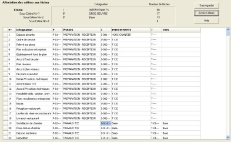

Remarques sur les codes critères et leurs tâches enveloppes
On a la possibilité de choisir 3 critères hiérarchisés.
Chacun des critères N-0 peut lui-même être décomposé en 3 sous critères : niveau N-1- niveau N-2 niveau N-3,
Le niveau suivant le plus faible des niveaux retenu sera le niveau des tâches d’exécution. (Exemple si l’on crée un niveau n-1 c’est le niveau N-2 qui sera le niveau des tâches d’exécution).
Pour a chacun de critères de ses sous critères on peut obtenir et visualiser une tâche enveloppe de ses sous critères d’un niveau inférieur : pour un critère N.0 tous ses sous/critères N-1, pour un sous/critère N-1 tous ses sous/critères N-2.
Ceci vous permet de visualiser pour un même projet
des plannings résumés aux seules tâches enveloppe
des plannings des tâches d’exécution.
les deux types de visualisation sur un même planning..
A partir de ces codes des sous critères affecter aux tâches on pourra :
sélectionner que les tâches qui ont un ou plusieurs code sous critère
trier les tâches les regrouper à partir de ces codes
visualiser les tâches sous différentes formes et ceci sous un ou plus niveaux hiérarchisés.
Une tâche enveloppe d’un sous critère
On peut matérialiser la représentation de la durée d'une période d'un groupe de tâches présentant un même sous critère par une tâche enveloppe.
Une tâche enveloppe d’un sous critère a comme date de début, la date de début de la première tâche qui possède ce sous critère et comme date de fin, la date de fin de la plus tardive des tâches de celui-ci.
La durée de cette tâche enveloppe est variable dans le temps, car elle s’inscrit entre le début et de la fin de l’exécution des tâches extrêmes qui ont ce code sous critère
Voir Paramétrage de la bande Enveloppe
Saisie des codes critères en vue de leur affectation aux tâches
Lorsqu’ on sélectionne la commande "Critères" du menu "Outils", la boîte de dialogue "Critères tâches" apparaît.
Dans le volet du haut de cette boite on a accès aux 3 codes critères. C1 à C3
Dans ce qui suit on va utiliser pour exemple le fichier «Restaurant » joint avec le logiciel
Dans un premier temps En fonction des besoins de traitements du projet, on va créer les codes de critères de votre projet remplaçant les codes successifs en attente : c,1 c2, c3.
- saisir dans les colonnes correspondants du volet du haut, leur code et la désignation de ceux-ci
| Par exemple , C1=Code P | Désignation Phases |
| C2 = Code I | Désignation Intervenants |
|  |
| Pour le Critère PHASES | Créer deux sous-critères N-1 |
| Préparation Réception Code P-01 | et Travaux TCE Code P-02 |
| Pour le critère INTERVENANTS | Créer 12 Sous-critères N-1 (12 Lots) |
| Gros Oeuvre Code I-01 à | Chambre Froide, code I-12 |
| De plus le Sous-Critère Gros Oeuvre Code I-01 | Aura deux sous-critères N-2 |
| "Base" Code I-01-01 et | "Sous Traitant" code I-01-02 |
| le sous-critère Chauffage Plomberie code I-05 | Aura deux sous-critères N-2 |
Affecter aux tâches du projet les critères et sous critères dans l'onglet d’affectation de critères
On peut saisir les codes de sous/critère des tâches avec deux procédures.
Tâche par tâche
- déplacez-vous devant la tâche concernée avec la flèche basse dans la colonne de ce critère
- saisissez le code sous critère correspondant
A partir d’un groupe de tâches cochées une coche apparaît dans la première case de sa ligne.
- placez-vous dans la case devant le n° de la tâche
- cliquez avec la souris sur cette case, ou appuyez sur la touche "Espace"
En suite, à toutes ces tâches cochées, on va leur affecter en même temps un code de sous/ critère
- cliquez sur la commande « Accès au critère » vous serez renvoyée a la boite précédente « Critère »
- cliquez dans une des colonnes N-1, N-2, N-3 sur le sous critère le plus faible N-3 ou N-2, voir N-1,
- cliquez sur la commande «Revenir Affectation critère »
Vous reviendrez dans cet onglet et vous constaterez qu’aux tâches cochées a été affecté ce sous critère
Lors de l’affectation des sous critères aux tâches
On va avec un filtre occultez les tâches à l’écran à qui on va affecter
un sous critère, puis cochez d’autres tâches et saisir pour celles-ci un
autre sous critère et ainsi de suite.
On peut également décocher, rapidement; en une seule fois, les tâches
cochées à qui on vient d’affecter un sous critère, avant dans cocher de nouvelles pour effectuer la même démarche.
- cliquez sur la commande « Décocher toutes les tâches» du menu « Cocher/Critère»
Visualisation des Critères et Sous-Critères Affectés aux taches
Dans l'onglet affectation des critères, on peut visualiser quels sont les critères et sous critères qui sont été affectés aux tâches du projet.
Il y a autant de lignes dans cet onglet que de tâches du projet. Après les colonnes numérotation et désignation des tâches on a les colonnes des 3 critères que l’on peut affecter aux tâches, par exemple : P- I -T, avec leur désignation correspondante.
- en cliquant sur chacune des colonnes des critères vous connaîtrez le sous critère correspondant
C’est le code le plus faible du sous/critère affecté aux tâches qui va apparaître dans la colonne du critère correspondant, exemple En haut du volet vous verrez apparaître la hiérarchie du critère et sous critère avec le nombre concernée des tâches aux différents niveaux.
C'est à partir de cette affectation aux tâches d' critères et sous critères que l'on pourra, ensuite, trier et regrouper les tâches dans les plannings.
| Sommaire | Mots Clés | A | B | C | D | E | F | G | H | I | J | K | L | M | N | O | P | Q | R | S | T | U | V | W | X | Y | Z | Autres |